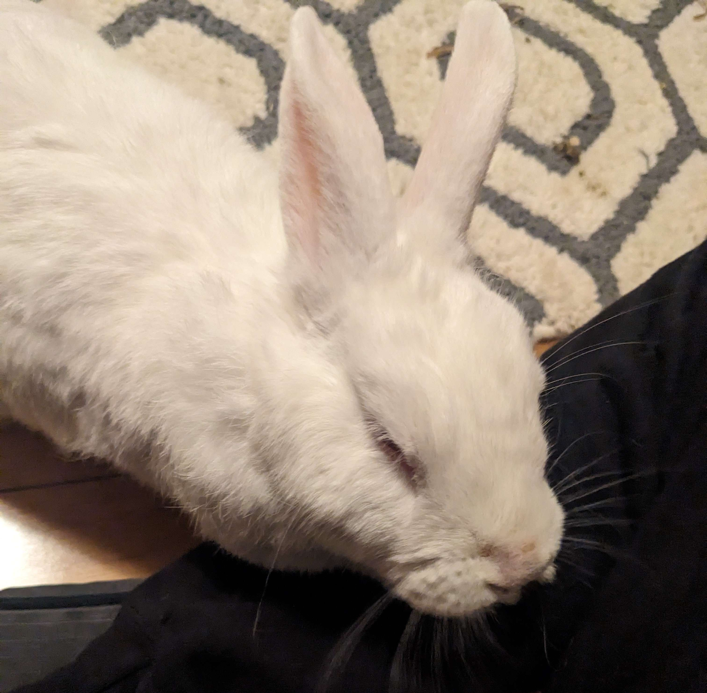

I went home this weekend (from the dorms) for the first time since the semester started.
It is extremely busy! But it is nice to be home and I got to see my
lovely bunny, Hin-Noon. Also, here is a song I'm listening to.

She is currently molting
Things I Needed
Here are some of the things on my grocery (or basement raid) list:
poptarts?
s'mores ingredients?
cold medicine?
nutella?
seaweed?
pasta sauce?
ramen
cough drops
cereal
sugar
parmesan cheese
gum
protein bars
tea
peanut butter
The items with question marks are things that aren't a priority, or I just wasn't sure if
I would get them.
Here are some of the miscellanous things I wanted to get from home:
They are numbered by the general order that I'm working on them. I determine
priority by level of difficulty, length, deadline. Here's how I broke down
these ones in my head: